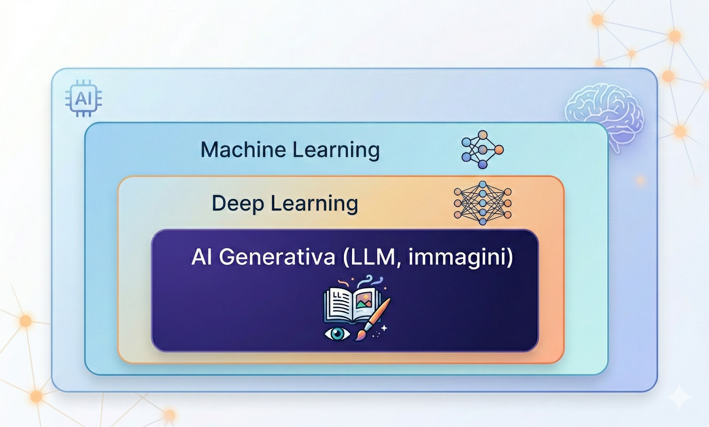
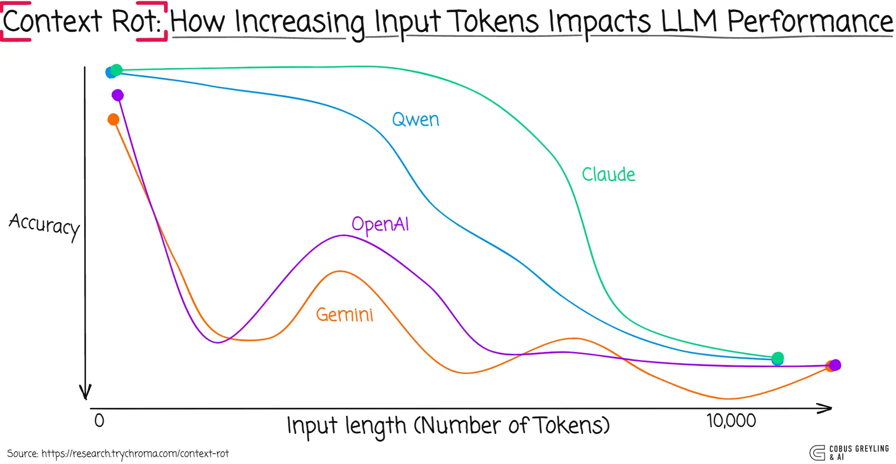
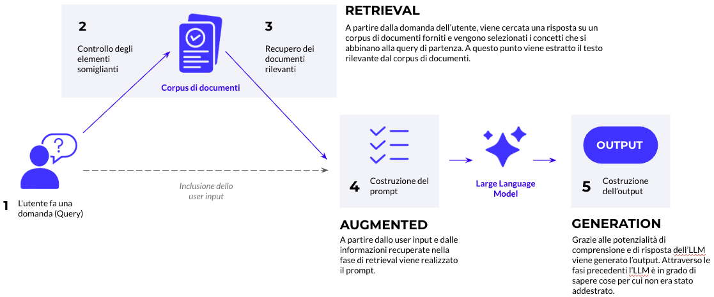

Introduzione all'AI e a Claude
Concetti fondamentali di intelligenza artificiale, Claude e prompt engineering per il lavoro quotidiano
Sessione da 4 ore · 10 luglio 2026
Obiettivi della sessione
Al termine della sessione sarai in grado di:
- Spiegare cos'è un LLM e come genera testo (token, contesto, addestramento)
- Distinguere fine-tuning, RAG e prompting e scegliere l'approccio corretto
- Orientarti tra i livelli e le risorse della guida Claude 101
- Scrivere prompt strutturati ed efficaci per il lavoro quotidiano
- Capire cosa sono MCP, tool calling e le skill Claude riutilizzabili in azienda
Programma della Sessione
| Durata | Blocco | Argomenti |
|---|---|---|
| 60 min | Ora 1 · Concetti AI |
|
| 60 min | Ora 2 · Claude |
|
| 60 min | Ora 3 · Prompting & Skill |
|
| 60 min | Ora 4 · Use Case |
|
Concetti Fondamentali di AI
Modelli e tokenizzazione · Context window e context rot · Fine-tuning, RAG e prompting · Agenti e tool reali
AI, ML, Deep Learning, AI Generativa

- AI — sistemi che eseguono compiti tipicamente umani
- ML — apprende da dati, senza regole scritte a mano
- Deep Learning — ML con reti neurali profonde
- AI Generativa — produce testo, immagini, audio, codice
Esempi concreti: modelli in uso oggi
Machine Learning
Regressione, alberi decisionali, random forest.
Previsione vendite, scoring crediti, rilevamento frodi.
Deep Learning
Reti neurali profonde, reti convoluzionali (CNN).
Riconoscimento immagini, trascrizione vocale.
AI Generativa
LLM (GPT-4, Claude, Gemini, Llama); modelli immagine (Midjourney, DALL-E, Stable Diffusion).
Genera testo, codice, immagini.
Cos'è un Large Language Model
Come funziona
- Il testo viene spezzato in token (pezzi di parola) e convertito in numeri
- Il modello predice, un token alla volta, quale sia il più probabile successivo
- Ha imparato questa capacità leggendo enormi quantità di testo
Cosa NON fa
- Non "ragiona" come un umano: non ha una comprensione, ma un modello statistico del linguaggio
- Può generare testo fluente e sbagliato allo stesso tempo (allucinazioni)
- Non accede a dati nuovi se non glieli fornisci tu (vedi RAG)
Tokenizzazione: il testo diventa numeri
Prima di elaborare il testo, l'LLM lo converte in token (frammenti di parole).
- ~1 token ≈ 0.75 parole in inglese / ~0.6 parole in italiano
- Il costo delle chiamate API si misura in token (input + output)
- Parole rare o tecniche → più token → più costose
Strumento interattivo: platform.openai.com/tokenizer
Come un LLM genera testo
Context Window
Cos'è
- La quantità di testo che il modello può "vedere" in un colpo solo (prompt + conversazione + documenti allegati)
- Misurata in token, non in parole o pagine
- I modelli attuali vanno da ~128k a oltre 1M di token di contesto
Perché conta
- Contesto pieno → il modello "dimentica" le parti più vecchie della conversazione
- Più contesto non è sempre meglio: informazioni irrilevanti diluiscono l'attenzione del modello
- Documenti lunghi vanno riassunti o recuperati selettivamente (vedi RAG), non sempre incollati per intero
Context window: un esempio di conversazione
Cosa succede in pratica
- Ogni nuovo messaggio si aggiunge alla conversazione, ma la finestra di contesto ha una dimensione massima
- I messaggi più vecchi, se il contesto è pieno, escono dalla finestra: il modello smette di "vederli"
- Il modello risponde solo in base a ciò che rientra ancora nella finestra
Context rot: quando iniziare una nuova conversazione
Man mano che il contesto cresce — specialmente se pieno di informazioni irrilevanti o contraddittorie — la qualità delle risposte peggiora. Non solo quando il contesto è "pieno": già prima.
Regola pratica: apri una nuova conversazione quando
- Cambi argomento in modo netto rispetto a quanto discusso finora
- Il modello inizia a ignorare istruzioni date in precedenza
- La conversazione ha accumulato molti tentativi e correzioni falliti
- Stai per iniziare un task grande, indipendente dal precedente
Context rot: cosa dicono i benchmark

Accuratezza al crescere della lunghezza del contesto in input, su diversi modelli — non è un problema isolato di un singolo modello, è un pattern osservato su tutti gli LLM principali.
RAG — Retrieval Augmented Generation

- Documenti → vettori numerici (embedding)
- Domanda → recupero dei passaggi più simili
- Passaggi nel prompt → risposta basata su di essi
Fine-tuning, Prompting, RAG: quando usare cosa
| Approccio | Quando |
|---|---|
| Prompting | Quasi sempre il primo passo |
| RAG | Conoscenza aggiornata o specifica |
| Fine-tuning | Stile molto specifico, alto volume — raro |
Agenti con accesso a strumenti reali
Un agente può avere accesso diretto a strumenti come lettura file, esecuzione di script o comandi da terminale — non solo API esterne.
Tools, Function Calling e MCP
Dall'LLM al mondo reale
- Un modello, da solo, può solo generare testo — non può cercare sul web, leggere un file o interrogare un sistema
- Function calling: definisci strumenti (funzioni) che il modello può decidere di invocare, con parametri strutturati
- Il modello non esegue lo strumento: chiede all'applicazione di eseguirlo e gli passa il risultato
MCP — Model Context Protocol
- Uno standard aperto per collegare un modello a strumenti e sorgenti dati esterne
- Invece di integrare ogni tool a mano per ogni applicazione, un server MCP espone gli stessi strumenti a qualsiasi client compatibile
- Ne riparliamo con esempi pratici nell'Ora 3
Agenti AI: LLM, Assistente, Agente
LLM
Risponde a una domanda con una singola generazione di testo. Nessuna azione sul mondo esterno.
Assistente
Conversazione con memoria del contesto. Può richiamare uno strumento se glielo chiedi esplicitamente.
Agente
Pianifica autonomamente una sequenza di passi: Reason → Act → Observe, ripetuta finché il task è completo.
Gli agenti sono potenti ma meno prevedibili: vanno supervisionati, specialmente su azioni con conseguenze reali (invio email, modifiche a dati).
Riepilogo Ora 1
- Un LLM tokenizza il testo e predice un token alla volta, non "ragiona" come un umano
- La context window è la memoria di lavoro del modello: va gestita con cura, e "context rot" ci dice quando ripartire da zero
- Prompting → RAG → fine-tuning, in ordine di complessità crescente — ma solo il fine-tuning cambia davvero il modello
- Un agente pianifica ed esegue passi in autonomia, con accesso a strumenti reali (file, codice, terminale); tool calling e MCP lo collegano al mondo esterno
Introduzione a Claude
Le 18 pagine della guida Claude 101, livello per livello, con 4 esercizi pratici dal vivo
Claude 101: una guida a 4 livelli
claude101.com raccoglie 18 articoli pratici organizzati per livello di esperienza, dal primo utilizzo fino all'uso avanzato al lavoro. Li ripercorriamo tutti, livello per livello, con 4 esercizi pratici dal vivo.
- Livello 1 — Beginner: 3 articoli, primi passi, letture da 4-5 minuti
- Livello 2 — Intermediate: 6 articoli, Cowork, team, progetti, skill — letture da 6-18 minuti
- Livello 3 — Advanced: 6 articoli, personalizzazione, tecniche oltre il prompting classico — letture da 4-20 minuti
- Livello 4 — Expert: 3 articoli, connettori, Claude Code, adozione aziendale — letture da 8-14 minuti
Livello 1 — Beginner: cosa vedremo
- Claude For Dummies (5 min) — primi passi con Claude
- Be good at Claude is (stupidly) simple (5 min) — guida di sopravvivenza all'uso quotidiano
Claude For Dummies
Le tre modalità
- Chat (claude.ai) — interazioni rapide, funziona anche sul piano gratuito
- Desktop — stesso account, installato in locale: vede i tuoi file e sblocca Chat, Cowork e Code
- Cowork — Claude lavora da solo per minuti o ore su un task reale, mentre tu fai altro
Cinque regole per prompt efficaci
- Sii specifico — "Scrivi una mail di follow-up a Sarah, che ha saltato la call di martedì. Tono cordiale ma deciso, max 4 frasi."
- Fornisci esempi — incolla un testo che ti piace e digli: "scrivi così"
- Dì cosa vuoi, non cosa non vuoi — meglio "scrivila come a un collega" che "non renderla troppo formale"
- Parti breve, aggiungi dettaglio — inizia con 2 frasi, guarda cosa risponde, poi aggiungi "accorcialo", "cambia il tono", "aggiungi una sezione su X"
- Se si confonde, apri una nuova chat — quando le risposte iniziano a sembrare fuori fuoco, apri una chat nuova e incolla il contesto chiave
Claude: cosa fa bene, cosa fa male
Cosa fa bene
- Scrivere: bozze, riscritture, editing, adattamento al tuo stile
- Riassumere: incolla un PDF di 50 pagine nella chat
- Ragionare insieme a te: mettere ordine in un'idea confusa
- Lavorare sui tuoi file: nell'app desktop e in Cowork
- Documenti lunghi: carica file di 200 pagine, contesto completo
- Ragionamento passo passo: dagli una domanda complessa
Cosa fa male
- Informazioni in tempo reale: Claude non sa cosa è successo oggi
- Matematica precisa: non usarlo come calcolatrice
- Prompt vaghi: "scrivi qualcosa di buono" non basta
- Essere una fonte di verità: suona autorevole anche quando sbaglia
- Generare immagini: le legge e le analizza, non le crea
Esercizio pratico — Riscrivi nel tuo stile
~8 minuti · serve solo un account Claude gratuito
- Accedi a claude.ai con un account gratuito
- Incolla un tuo testo reale (email, comunicazione interna, breve report)
- Chiedi a Claude di riscriverlo mantenendo il tuo stile ma migliorando chiarezza e tono
- Confronta il risultato con l'originale: cosa ha cambiato? Cosa avresti fatto diversamente?
Be good at Claude is (stupidly) simple
- Cambia modello: Opus per task complessi e di ragionamento (effort), Sonnet per task noti
- Tecnica AskUserQuestion: istruisci Claude a farti domande di chiarimento prima di eseguire — es. "Aiutami a fare [X] per [Y]. Usa AskUserQuestion prima." Di solito fa 3-5 domande: più rispondi, meglio è la risposta finale
- I Connector integrano email, calendario, trascrizioni di riunioni per dare contesto
- Il comando
/skill-creatorcostruisce skill personalizzate passo passo — es. "Voglio insegnare a Claude a creare fogli Excel come piacciono a me, ma fammi prima delle domande." Una volta salvata, la skill si richiama con un comando come/excel-style
Livello 2 — Intermediate: cosa vedremo
- Claude Cowork (18 min) — collaborazione locale con l'AI
- Claude for teams (11 min) — onboarding e configurazione per i team
- Claude Design (9 min) — siti, slide e video con l'AI
- Claude Cowork + Projects (10 min) — spazi di lavoro persistenti
- Claude for slides (7 min) — metodo per creare presentazioni
- Claude Skills (6 min) — automatizzare workflow ricorrenti
Claude Cowork
Architettura a cartelle
- ABOUT ME: chi sei, il tuo stile, gli obiettivi aziendali — letto prima di ogni sessione
- OUTPUTS: risultati generati per ogni progetto
- TEMPLATES: strutture riutilizzabili dai tuoi lavori migliori
Economia dei token
- Il messaggio 30 costa ~31 volte il messaggio 1 — riparti da una nuova chat dopo ~20 messaggi
- Sonnet/Haiku per task semplici, Opus + Extended Thinking per lavoro complesso
Esercizio pratico — Configura il tuo Cowork
~10 minuti · serve l'app desktop di Claude
- Apri l'app desktop di Claude e crea una cartella "Claude Cowork" con tre sottocartelle: ABOUT ME, OUTPUTS, TEMPLATES
- Scrivi un
about-me.mdessenziale: 5-6 righe su ruolo, stile di lavoro, priorità - Imposta le Istruzioni Globali (Impostazioni → Cowork) perché legga sempre quella cartella
- Fai una prima richiesta reale: "Leggi la cartella e riassumi cosa sai di me"
Claude for teams
Setup
- Piano Team: minimo 5 posti (fino a 150), livello Premium consigliato per uso quotidiano
- Architettura a Project: 3-5 Project per tipo di deliverable ricorrente, ognuno con istruzioni e documenti mirati
Adozione
- Converti prima un collega oberato di lavoro, poi usa il suo entusiasmo per il rollout
- Prompt template a una frase, un solo campo di input, pronti da copiare per i colleghi
- Claude non si addestra sui dati del team, a nessun livello di piano
Claude Design
Cos'è
- Prodotto separato su claude.ai/design, richiede piano Pro/Max o abilitazione admin per Team/Enterprise
- Tre formati di output: siti ad alta fedeltà, presentazioni (con note del relatore), video animati
Attenzioni
- Il consumo di token è molto rapido — richiede monitoraggio attento
- Un file DESIGN.md (linee guida di brand estratte) permette a Claude di applicare uno stile coerente senza doverlo rispecificare ogni volta
- Workflow avanzato: post/brief → ricerca → video animato → deck di slide, spesso con risultati migliori della generazione diretta del deck
Claude Cowork + Projects
Cosa risolve
- Combina memoria persistente e ambito ristretto con esecuzione agentica, integrato nell'app desktop
- Tre modalità di creazione: da zero, da un Project esistente, o da una cartella locale
Limiti e usi
- La memoria isolata per Project evita che il contesto di un progetto contamini un altro
- I task pianificati automatizzano attività ricorrenti quando l'app desktop è attiva
- Limite: i Project Cowork sono locali alla macchina — non ancora condivisibili in team
Claude for slides
Tre metodi
- Claude da solo — rapido ma design piatto
- Uno strumento di design esterno — output rifinito, immagini AI, analytics
- I due combinati — consigliato per deck importanti
Pipeline consigliata
- Standardizzazione del brand aziendale tramite un tema condiviso + un file brand-deck-rules.md
- Pipeline "ricerca → brief": Claude fa la ricerca web, produce un brief strutturato, poi un outline slide-per-slide
Claude Skills
Cos'è una Skill
- Istruzioni persistenti e riutilizzabili, richiamabili automaticamente (es. via
/comando) quando Claude riconosce il task giusto - Non serve invocarla a mano: si attiva da sola in base alla descrizione
- Si costruisce con lo Skill Creator integrato (intervista guidata) e produce un file SKILL.md
Cosa rende una skill efficace
- La descrizione "quando usarla" è ciò che ne determina l'attivazione — se è vaga, la skill non parte
- Il "quando NON usarla" conta più del "quando usarla": evita che la skill si attivi a sproposito
- Un task che richiedeva 12.000 token e 15 scambi è sceso a 6.000 token e 2 scambi grazie a una skill
Livello 3 — Advanced: cosa vedremo
- Claude to sound like you (12 min) — catturare lo stile di scrittura di un team
- Stop hitting Claude limits (12 min) — gestire i limiti di utilizzo
- Stop Prompting (10 min) — tecniche oltre il prompt engineering tradizionale
- Claude replaced me (4 min) — trasformare competenza ripetuta in una skill
- Stop sounding like AI (20 min) — eliminare i pattern linguistici artificiali
- Excel with Claude cowork (7 min) — creare fogli di calcolo con l'AI
Claude to sound like you
Cosa cattura
- Lo stile di scrittura di un team (scelte lessicali, tono, struttura) può essere catturato in un file di testo e riutilizzato in ogni conversazione
- Processo di estrazione: intervista guidata (100 domande) su tono, regole di scrittura, esempi da imitare/evitare
Il file risultante
- Il risultato viene compresso da decine di migliaia di parole a un file di 2.000-5.000 token — solo le istruzioni ad alto segnale restano
- Va salvato nella cartella Cowork per essere caricato automaticamente ad ogni sessione
- È portabile su altri assistenti AI ed è un documento vivo, da aggiornare nel tempo
Stop hitting Claude limits
Da dove vengono i costi
- Ogni messaggio rilegge l'intera cronologia della conversazione — i messaggi successivi costano esponenzialmente di più
- Un PDF costa 1.500-3.000 token a pagina, uno screenshot ~1.300 — convertire in testo semplice riduce i costi
Come ridurli
- Abbinamento prodotto-task: Chat+modello leggero per domande rapide, Cowork+Opus per report su file, Code+Sonnet per task sui dati
- Le conversazioni lunghe diventano "fornaci di token" (il 98,5% della spesa va a rileggere la cronologia) — riparti dopo 15-20 messaggi
- "Modifica invece di rispondere": usa Edit su un messaggio precedente e rigenera, invece di accumulare follow-up
Stop Prompting
Il problema
- I prompt "usa e getta" producono risultati generici perché mancano di contesto su stile, pubblico, obiettivi
La soluzione
- Cowork collega Claude a una cartella locale di file di istruzioni in markdown, letti automaticamente ad ogni sessione
- Un editor di note esterno (gratuito) permette di modificare facilmente quella stessa cartella
- Le Skill trasformano workflow ricorrenti in comandi riutilizzabili
Claude replaced me
- L'autore ha creato una skill che automatizza una guida che prima scriveva a mano ogni settimana per i suoi lettori
- Il valore umano si sposta su "la parte difficile": risolvere eccezioni, testare iterazioni, accompagnare le persone nel cambiamento
- Modello consigliato per skill complesse: un modello di fascia alta con "effort" alto
Stop sounding like AI
I segnali
- Il pattern "non è X, è Y" appare 4 volte più spesso nei documenti aziendali recenti — è un segnale riconoscibile di testo generato da AI
- Lista di 100+ parole da evitare ("sfruttare", "sinergia", "senza soluzione di continuità"...)
- Oltre 15 pattern strutturali da evitare, non solo di vocabolario
Come intervenire
- La specificità batte la levigatezza: sostituire affermazioni vaghe con dettagli concreti
- Un file di stile "anti-AI" letto da Claude prima di ogni task, invece di ripetere le istruzioni ogni volta
Esercizio pratico — Verifica il tuo testo
~8-10 minuti · serve un tuo testo aziendale reale
- Crea un file di stile "anti-AI" con la lista di parole/pattern da evitare (fornito durante la sessione)
- Prendi un tuo testo aziendale reale (email, comunicazione, report breve)
- Chiedi a Claude: "Verifica questo testo usando il file di stile anti-AI: quali pattern trovi?"
- Rivedi insieme le correzioni proposte
Excel with Claude cowork
Perché Cowork
- Risultato il miglior strumento per costruire fogli di calcolo da zero, testato contro altri 10 strumenti AI
- Workflow a 3 strumenti: Cowork (creazione) → foglio condiviso (condivisione/archiviazione) → editor esterno (modifica avanzata)
Come strutturare il prompt
- Scopo, fogli necessari, specifiche di formattazione, e "le 10 assunzioni principali da verificare" prima di procedere
- Richiede piano Pro per l'app desktop; un connector cloud storage semplifica il trasferimento
Livello 4 — Expert: cosa vedremo
- Claude Connectors (8 min) — integrare Claude con applicazioni esterne
- Claude Code (14 min) — costruire app/siti senza saper programmare
- Stop using your own Claude at work (9 min) — governance e sicurezza dell'AI personale in azienda
Claude Connectors
Cosa sono
- Oltre 200 connector disponibili (email, messaggistica, CRM, note riunioni, cloud storage)
- Tre connector fondamentali consigliati per iniziare: note riunioni, email, messaggistica di team
Buone pratiche
- Per efficienza di token, tieni i connector disattivati di default — attivali solo per la chat che ne ha bisogno
- Prima settimana in sola lettura, poi eventualmente accesso in scrittura
- Disattiva i connector durante il lavoro creativo/di bozza per evitare rumore di contesto
Claude Code
Cos'è il vibecoding
- Costruire app/siti descrivendo i requisiti in linguaggio naturale, senza saper programmare
- Due casi d'uso principali: mockup cliccabili per briefare sviluppatori/designer, strumenti interni su misura dove piccole imperfezioni sono accettabili
Come si usa
- Non è una scorciatoia imprenditoriale: il valore è l'efficienza, non sostituire un team di sviluppo
- Richiede piano Pro, una cartella dedicata, modalità permessi avanzata, un modello di fascia alta
- Il passaggio a sviluppatori professionisti avviene tramite un documento di consegna (stack usato, funzionalità pronte, punti da rifinire)
Stop using your own Claude at work
I rischi
- Gli account AI personali si addestrano di default sulle conversazioni — va disattivato manualmente
- Rischi legali concreti: violazioni di NDA, segreti industriali, normativa privacy (GDPR in Europa)
- Caso reale noto: ingegneri disciplinati dopo aver condiviso codice sorgente sensibile con un assistente AI personale nel giro di pochi giorni
Come proteggersi
- La ricerca mostra che la maggioranza dei lavoratori usa chatbot personali per il lavoro senza approvazione IT, e molti hanno incollato informazioni sensibili almeno una volta
- Rischio "combinazione letale": account AI personale collegato via connector a email/drive/messaggistica aziendali
- Contenuti da non condividere mai: codice sorgente, dati clienti, roadmap non pubbliche, dati finanziari non pubblici, materiale coperto da NDA, credenziali
Esercizio pratico — Metti in sicurezza il tuo account
~5 minuti · funziona su qualsiasi piano
- Vai su Impostazioni → Privacy e disattiva "Aiuta a migliorare i nostri modelli AI"
- Verifica la stessa impostazione su qualsiasi altro assistente AI personale che usi
- Prova una chat "Incognito/Temporanea" per un'informazione che non vuoi salvata
- Rivedi quali connector hai collegato e disconnetti quelli che non usi più
Riepilogo Ora 2
- claude101.com copre 4 livelli e 18 articoli, da primo utilizzo ad adozione aziendale avanzata
- Cowork porta Claude a lavorare direttamente sui tuoi file locali, con contesto persistente; i Project isolano memoria e istruzioni per ogni area di lavoro
- Le Skill automatizzano processi ricorrenti: le vediamo applicate in azienda nell'Ora 3
- Abbiamo messo in pratica 4 esercizi dal vivo: riscrittura nel tuo stile, setup Cowork, verifica anti-AI di un testo, messa in sicurezza dell'account
Prompting, MCP e Skill Aziendali
Prompt engineering efficace · Model Context Protocol · Skill Claude riutilizzabili in azienda
Anatomia di un prompt efficace
- Ruolo — chi deve "essere" il modello (es. "Sei un analista finanziario")
- Contesto — informazioni di sfondo rilevanti per il task
- Istruzione — cosa deve fare, in modo specifico e verificabile
- Formato di output — come vuoi la risposta (elenco, tabella, lunghezza, tono)
- Esempi — 1-2 esempi di input/output atteso, quando il formato è particolare
Zero-shot, Few-shot, Chain-of-Thought
Zero-shot
Chiedi direttamente, senza esempi. Funziona bene per task comuni e ben definiti.
Few-shot
Fornisci 2-3 esempi di input/output prima della richiesta reale. Utile per formati specifici o stile particolare.
Chain-of-Thought
Chiedi al modello di ragionare passo passo prima della risposta finale. Migliora l'accuratezza su task complessi.
Esempio: da prompt vago a prompt efficace
Errori comuni nel prompting
- Istruzioni ambigue o troppo generiche ("migliora questo testo")
- Nessun formato di output richiesto: il modello sceglie per te, spesso in modo incoerente
- Troppo contesto irrilevante, che diluisce l'attenzione del modello
- Nessuna verifica dell'output: il modello può essere sicuro e sbagliato allo stesso tempo
- Un unico prompt enorme invece di scomporre il task in passi più piccoli
MCP — Model Context Protocol
Il problema
- Ogni applicazione AI che vuole usare strumenti esterni (calendario, CRM, file, database) dovrebbe integrarli uno per uno
- Duplicazione di lavoro tra team e strumenti diversi
La soluzione
- MCP è uno standard aperto: un "server" espone un set di strumenti in un formato comune
- Qualsiasi client compatibile (Claude incluso) può collegarsi e usarli, senza integrazione custom
- Un server MCP per il CRM aziendale, ad esempio, funziona sia con Claude che con altri strumenti compatibili
Esempio pratico: assistente collegato a un tool
Scenario: "Controlla se ci sono riunioni libere domani pomeriggio e proponi 3 orari."
- Il modello riconosce che serve leggere un calendario e richiama lo strumento
get_calendar_eventsesposto da un server MCP collegato al calendario aziendale - Riceve la lista di eventi come risultato strutturato (JSON)
- Genera la risposta finale in linguaggio naturale, basata sui dati reali ricevuti — non inventati
Dalla Skill personale alla Skill aziendale
Cosa abbiamo visto nell'Ora 2
- Una Skill è un file SKILL.md: trigger, descrizione "quando usarla" / "quando NON usarla", istruzioni passo-passo
- Si attiva automaticamente quando Claude riconosce il task
Perché renderla "aziendale"
- Una skill codifica un processo che normalmente vive solo nella testa di una persona (o in un documento che nessuno legge)
- Condivisa nel team, garantisce lo stesso standard di qualità/formato a chiunque la usi
- È un asset riutilizzabile: si aggiorna una volta, migliora ogni utilizzo futuro
Skill aziendali Hup — da completare
Struttura suggerita per ogni skill da presentare: nome del trigger · problema che risolve · input tipico · output prodotto · impatto misurato.
Riepilogo Ora 3
- Un buon prompt definisce ruolo, contesto, istruzione, formato e — quando serve — esempi
- MCP standardizza come un modello si collega a strumenti e dati esterni
- Le skill aziendali trasformano un processo individuale in uno standard condiviso dal team
Use Case
Esempi pratici applicati al nostro contesto di lavoro
Use case — da definire
Per ogni use case: scenario di partenza · strumento/approccio usato (prompting, RAG, agente, skill) · risultato ottenuto.
Riepilogo della sessione
Concetti e Claude
- Come funziona un LLM e quando usare prompting, RAG o fine-tuning
- Agenti, tool calling e MCP
- I 4 livelli della guida Claude 101
Prompting e pratica
- Anatomia di un prompt efficace e tecniche few-shot/CoT
- Come MCP e le skill aziendali automatizzano processi ricorrenti
- I nostri use case (Ora 4)
Domande?
Grazie per l'attenzione.
Glossario
Termini chiave usati durante la sessione
Abbreviazioni e termini chiave
| Termine | Significato |
|---|---|
| LLM | Large Language Model — modello addestrato a predire testo |
| Token | Unità minima di testo elaborata dal modello (parola o frammento) |
| Context window | Quantità massima di token che il modello può considerare in una richiesta |
| Fine-tuning | Riaddestramento del modello su esempi specifici |
| RAG | Retrieval Augmented Generation — recupero di documenti rilevanti inseriti nel prompt |
| Embedding | Rappresentazione numerica del significato di un testo |
| Agente | Sistema che pianifica ed esegue autonomamente una sequenza di azioni |
| MCP | Model Context Protocol — standard aperto per collegare modelli a strumenti esterni |
| Function calling | Meccanismo con cui un modello richiede l'esecuzione di una funzione esterna |
| Prompt engineering | Disciplina di scrittura di istruzioni efficaci per un modello |
| Skill | Istruzioni Claude riutilizzabili, attivate automaticamente in base al task |